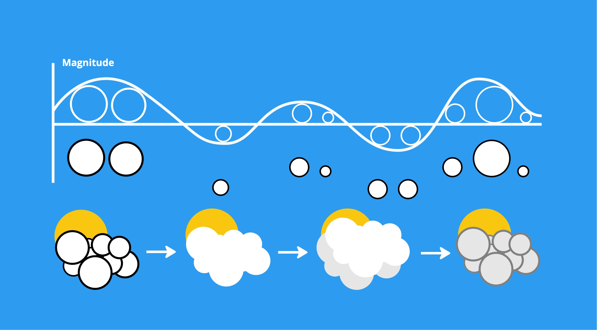

The simulation word I got is "Accretion." The definition of "Accretion" is The process of growth or increase, typically by the gradual accumulation of additional layers or matter. So, I just think of some objects that I am interested in making.
The next step is to find some images to make some references.
I decided to make a simulation of cloud accretion. At first, I wanted to use Unity VFX and graph shader to create a realistic scene. However, I am more interested in using code language to create the "gradual process" of accretion. So, I picked p5.js to be my final form. The scene I want to make is a 2D graphic motion in p5.js from sunny to less cloudy, less cloudy to cloudy, and cloudy to rainy.
Here is the diagram of my cloud-making in p5.js. And I will use the "Perlin Noise" function in p5.js to write my cloud maker. 
The first version I made for the first week is a 2D graphic motion, one single cloud accretion process. An automatic loop of a sunny day becomes a rainy day.

I added a "MousePressed" function for the following week. It allows me to add multiple clouds when my mouse clicks. And I can make the clouds more fluffy.

Thinking about the simulation of "Accretion," it is a process of objects accumulating and becoming bigger and bigger, so for my final edition, I won't let clouds become smaller after raining like in the previous two editions, I will let all the clouds become the bigger and darker until the whole screen covered by all the clouds. Also, I add some sounds into the motion.
I recorded the process of my coding in p5.js.